Brand voice và tone of voice khác gì nhau? Ví dụ cho SME
Brand voice là giọng thương hiệu tương đối ổn định, thể hiện cá tính và nguyên tắc giao tiếp, còn tone of voice là giọng điệu được điều chỉnh theo tình huống và trạng thái của người nhận. Tôi là Lê Tuấn Việt, Marketing Leader tại TAKI Group, đã tư vấn hệ thống nội dung cho hơn 200 doanh nghiệp SME. Bài viết này phân biệt hai khái niệm bằng số liệu thực nghiệm, case công khai của Monzo và khung guideline sáu bước.
- Đăng ngày
- Cập nhật
Tóm tắt nhanh
- Voice trả lời thương hiệu là ai, tone trả lời cách nói trong từng hoàn cảnh cụ thể.
- Nhất quán không có nghĩa dùng một mức cảm xúc cho mọi thông điệp: nhầm theo hướng nào cũng gây thiệt hại đo được.
- Thực nghiệm của Nielsen Norman Group cho thấy mức đáng tin giải thích 52% khả năng người đọc giới thiệu thương hiệu, còn mức thân thiện chỉ thêm 8%.
- Guideline dùng được phải nối tính từ với quy tắc diễn đạt kiểm tra được, và khung sáu bước trong bài điền xong trong khoảng một giờ họp.
Mục lục bài viết12 phần
Brand voice là gì và tone of voice là gì?
Brand voice (giọng thương hiệu) là tập hợp đặc điểm cá tính ổn định mà người đọc nhận ra khi tiếp xúc nhiều nội dung của một doanh nghiệp, ví dụ rõ ràng, gần gũi và tôn trọng. Tone of voice (giọng điệu) là cách biểu đạt được điều chỉnh cho từng thông điệp, dựa trên việc người đọc cần gì và đang ở trạng thái cảm xúc nào.
Nói gọn trong một dòng: voice trả lời thương hiệu là ai, còn tone trả lời thương hiệu nói thế nào trong một hoàn cảnh cụ thể. Một thương hiệu có thể nói hào hứng khi giới thiệu sản phẩm, nói rõ ràng khi hướng dẫn và nói điềm tĩnh khi xin lỗi, nhưng vẫn giữ nguyên một bản sắc.
Hướng dẫn Voice and Tone của Mailchimp diễn đạt ranh giới này bằng một câu ngắn: bạn luôn có cùng một voice, nhưng tone thì thay đổi. Mailchimp ghi bốn thuộc tính giọng của họ là nói thẳng, chân thành, biết diễn giải thuật ngữ và hài hước kiểu kiệm lời. Bốn thuộc tính đó giữ nguyên trên mọi kênh, thứ thay đổi là mức độ đậm nhạt của từng thuộc tính.
Cần tách bạch thêm một điều quan trọng. Giọng thương hiệu và giọng điệu đều tác động tới cảm nhận người đọc, nhưng không thay thế được chất lượng sản phẩm hay tính chính xác của thông tin. Một lời xin lỗi nghe thân thiện vẫn thiếu giá trị nếu không nói rõ việc gì đã xảy ra và khách hàng sẽ được hỗ trợ ra sao.
Brand voice khác tone of voice ở điểm nào?
Bạn có thể xem voice là nguyên tắc xuyên suốt, còn tone là cách vận dụng nguyên tắc ấy trong từng cuộc giao tiếp. Khác biệt hiện rõ hơn khi đặt hai khái niệm cạnh nhau theo cùng một bộ tiêu chí.
| Tiêu chí | Brand voice | Tone of voice |
|---|---|---|
| Phạm vi | Toàn bộ cách thương hiệu giao tiếp | Một thông điệp hoặc một tình huống |
| Căn cứ | Định vị, giá trị và cá tính | Nhu cầu và cảm xúc người nhận |
| Độ ổn định | Tương đối lâu dài | Đổi giữa các tình huống |
| Biểu hiện | Thói quen giải thích, từ vựng | Mức hào hứng hoặc trang trọng |
| Ví dụ | Luôn rõ ràng và tôn trọng | Điềm tĩnh khi đơn giao chậm |
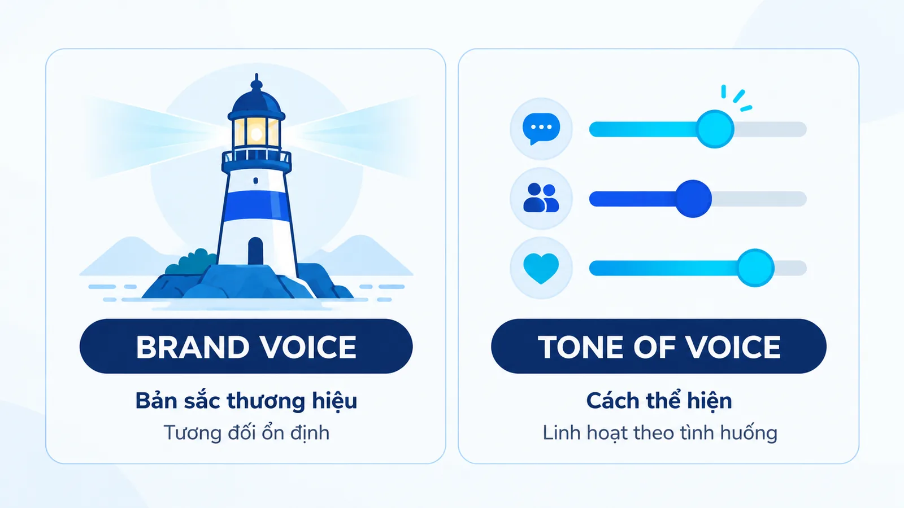
Nhất quán không có nghĩa dùng nguyên một câu mở đầu cho mọi kênh. Email cần đầy đủ chi tiết, bài mạng xã hội có thể ngắn hơn nhiều. Nếu cả hai đều dùng từ dễ hiểu, công bố điều kiện rõ ràng và không gây áp lực mua, người đọc vẫn nhận ra cùng một giọng thương hiệu. Cá nhân hóa bằng AI cũng vậy: lời chào có thể đổi theo từng khách nhưng giọng thương hiệu phải giữ nguyên, xem thêm bài AI personalization là gì.
Voice cũng không bất biến mãi mãi. Khi doanh nghiệp thay đổi định vị hoặc phục vụ một nhóm khách hàng khác, hướng dẫn giọng có thể cần cập nhật. Điều cần tránh là đổi cá tính tùy hứng giữa các bài mà không có lý do và không có nguyên tắc chung.
Vì sao SME cần phân biệt brand voice và tone of voice?
Câu trả lời ngắn: vì nhầm lẫn hai khái niệm này tạo ra hai kiểu tổn thất ngược chiều nhau, và cả hai đều đo được. Với doanh nghiệp SME (doanh nghiệp vừa và nhỏ), nơi chủ doanh nghiệp, người viết nội dung và nhân viên chăm sóc khách hàng cùng đại diện cho thương hiệu, khoảng cách đó lộ ra rất nhanh.
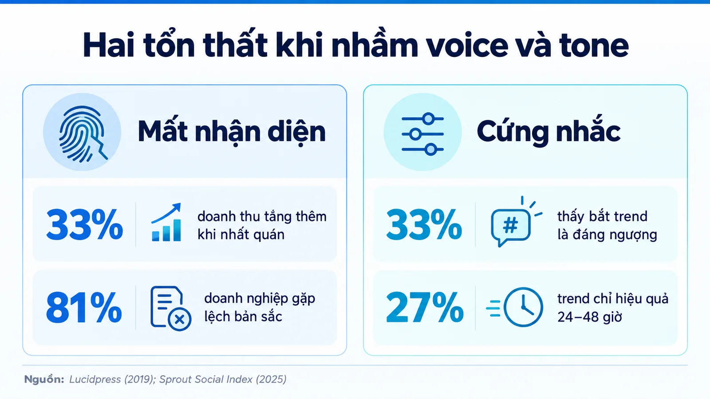
Kiểu thứ nhất là mất nhận diện. Lucidpress khảo sát hơn 200 tổ chức năm 2019 và ghi nhận mức tăng doanh thu tới 33% ở nhóm trình bày thương hiệu nhất quán, cao hơn mức 23% trong báo cáo năm 2016 của cùng đơn vị. Cũng trong khảo sát đó, 81% doanh nghiệp cho biết vẫn phải xử lý nội dung lệch bản sắc. Khi mỗi người viết tự chọn một cá tính, thương hiệu không còn được nhận ra như một người nói.
Kiểu thứ hai là cứng nhắc. Nếu đội ngũ hiểu nhất quán là dùng đúng một mức cảm xúc cho mọi thông điệp, họ sẽ giữ giọng vui vẻ cả khi khách đang bức xúc, hoặc giữ giọng trang trọng cả khi chỉ cần một câu nhắn ngắn.
Sprout Social Index 2025, khảo sát 4.044 người tiêu dùng từ ngày 13 đến 27 tháng 9 năm 2024, cho thấy tính chân thực và sự gần gũi là hai đặc điểm người tiêu dùng coi trọng nhất ở thương hiệu trên mạng xã hội. Cũng trong báo cáo đó, 33% người được hỏi cho rằng việc thương hiệu bắt trend viral là điều đáng ngượng, và 27% nói hiệu quả của một trend chỉ kéo dài 24 đến 48 giờ.
Hai con số cuối rất đáng chú ý với doanh nghiệp đang cân nhắc đổi giọng cho hợp thời. Chúng cho thấy việc mượn cách nói đang thịnh hành không tự động tạo thiện cảm, và tuổi thọ của cách nói đó rất ngắn. Bản sắc ổn định có tuổi thọ dài hơn nhiều.
Giọng điệu tác động tới cảm nhận người đọc ra sao?
Nielsen Norman Group đã đo tác động này bằng thực nghiệm chứ không dừng ở suy luận. Nhóm nghiên cứu cho 100 người dùng Mỹ trên 18 tuổi đánh giá tám mẫu nội dung, ghép thành bốn cặp cùng ngành gồm bảo hiểm xe, ngân hàng, an ninh gia đình và y tế.
Trong mỗi cặp, một mẫu viết theo giọng thân mật hoặc hài hước, mẫu còn lại viết theo giọng nghiêm túc hoặc trang trọng. Người tham gia chấm ba chiều: mức thân thiện, mức đáng tin và khả năng giới thiệu cho người khác.
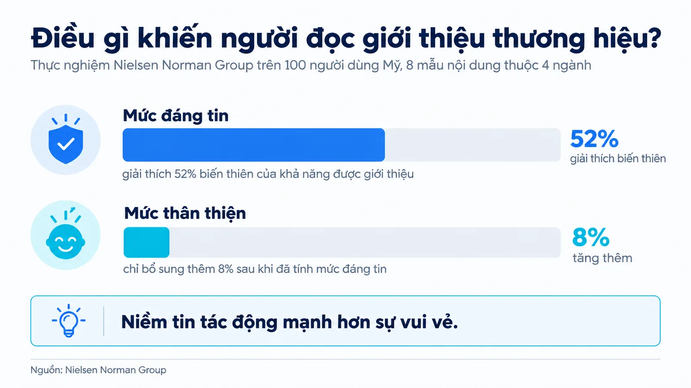
Kết quả quan trọng nhất nằm ở quan hệ giữa ba chiều đó. Mức đáng tin giải thích 52% biến thiên của khả năng được giới thiệu, trong khi mức thân thiện chỉ bổ sung thêm 8%. Nói cách khác, làm cho người đọc thấy tin tưởng có sức nặng gấp nhiều lần làm cho họ thấy vui.
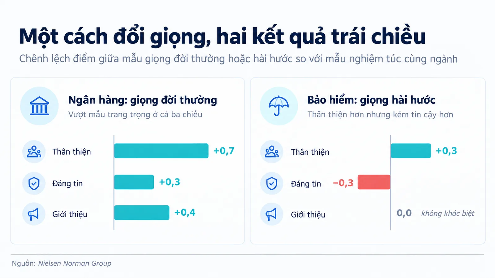
Chi tiết từng cặp còn cho thấy điều tinh tế hơn. Mẫu ngân hàng viết giọng đời thường vượt mẫu trang trọng ở cả ba chiều, hơn 0,7 điểm về thân thiện, 0,3 điểm về đáng tin và 0,4 điểm về khả năng giới thiệu. Nhưng mẫu bảo hiểm viết giọng hài hước lại cho kết quả ngược lại: thân thiện hơn 0,3 điểm, đáng tin thấp hơn 0,3 điểm, và không tạo khác biệt nào về khả năng giới thiệu.
Kết luận rút ra cho doanh nghiệp rất cụ thể. Hài hước không phải công tắc cứ bật lên là có lợi. Nó có ích khi người đọc đang thoải mái và chủ đề cho phép, nhưng gây hại khi chủ đề liên quan tới tiền, rủi ro hoặc sự cố. Đây chính là lý do phải có tone thay đổi theo tình huống thay vì một mức cảm xúc cố định.
Một brand voice, ba tình huống giao tiếp của SME
Hãy xét Cà phê Mộc, một thương hiệu bán cà phê rang cho người pha tại nhà. Đây là ví dụ biên tập giả định, không phải doanh nghiệp hay kết quả khách hàng có thật. Mộc chọn voice rõ ràng, gần gũi và tôn trọng, không dùng thuật ngữ để tạo khoảng cách và không hứa mọi người đều thích cùng một vị.
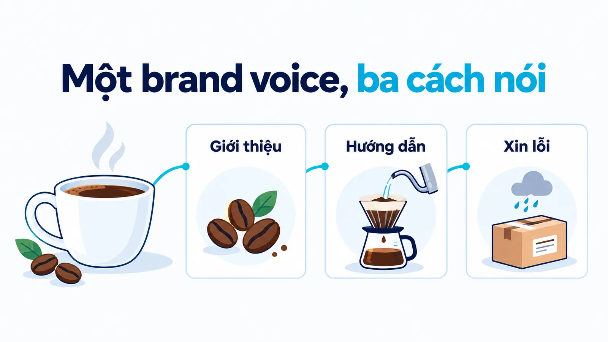
Giới thiệu sản phẩm mới
Thông điệp mẫu: mẻ rang mới có vị thiên về chocolate và hạt, nếu bạn thích ly cà phê ít chua thì đây là một lựa chọn đáng thử, và cảm nhận còn phụ thuộc cách pha cùng khẩu vị riêng. Giọng điệu cởi mở, có sự hào hứng nhưng không khẳng định tuyệt đối.
Cá tính rõ ràng nằm ở việc mô tả đặc điểm dễ hiểu. Sự tôn trọng nằm ở quyền lựa chọn của khách hàng. Thương hiệu không cần câu ngon nhất thị trường để thể hiện sự tự tin của mình.
Hướng dẫn khách pha tại nhà
Thông điệp mẫu: bạn có thể bắt đầu với tỷ lệ pha ghi trên bao bì, và nếu ly cà phê đậm hơn mong muốn thì hãy điều chỉnh một yếu tố mỗi lần để dễ nhận ra khác biệt. Giọng điệu bình tĩnh, hướng dẫn từng việc thay vì cố tạo cảm xúc mua hàng.
Nguyên tắc dùng từ dễ hiểu vẫn giữ nguyên. Tuy nhiên mức hào hứng giảm xuống, vì người đọc lúc này đang cần làm đúng thao tác. Chèn nhiều câu đùa ở đây có thể làm họ khó tìm ra chỉ dẫn chính.
Xin lỗi vì giao hàng chậm
Thông điệp mẫu: Mộc xin lỗi vì đơn của bạn chưa tới đúng thời gian đã hẹn, hiện chúng tôi đang xác nhận lịch giao với đơn vị vận chuyển và sẽ cập nhật lại trước 17 giờ hôm nay. Thời hạn trong ví dụ là giả định, khi dùng thật thì doanh nghiệp chỉ nên hẹn điều mình có thể thực hiện.
Giọng điệu nghiêm túc hơn nhưng vẫn gần gũi. Lời nhắn thừa nhận vấn đề, nói rõ hành động tiếp theo và tránh đổ trách nhiệm cho khách. Cùng một voice tạo ra ba tone khác nhau, vì nhiệm vụ của mỗi thông điệp vốn đã khác nhau.
Monzo điều chỉnh tone of voice theo kênh như thế nào?
Monzo, ngân hàng số của Anh, công khai toàn bộ hướng dẫn giọng trên website của họ. Đây là một trong số ít case bạn kiểm chứng trực tiếp được, thay vì đọc lại qua bài phân tích của người khác.
Monzo đặt tên cho ba nguyên tắc brand voice thay vì liệt kê các tính từ rời rạc. Cách đặt tên này khiến mỗi nguyên tắc trở thành một chỉ dẫn hành động, không phải một nhãn dán.
- Tử tế theo cách rõ ràng: Tập trung vào người đọc và chủ động làm cho điều phức tạp trở nên đơn giản hơn.
- Chút bất ngờ dễ chịu: Biến việc thường ngày thành khoảnh khắc dễ chịu, dựa trên trải nghiệm ai cũng có.
- Hài hước ấm áp: Gia vị tinh tế để người đọc thấy mình thuộc về câu đùa, chứ không phải đối tượng bị đùa.
Phần đáng học nhất không nằm ở ba cái tên, mà ở cách Monzo quy định liều lượng của từng nguyên tắc theo từng kênh giao tiếp.
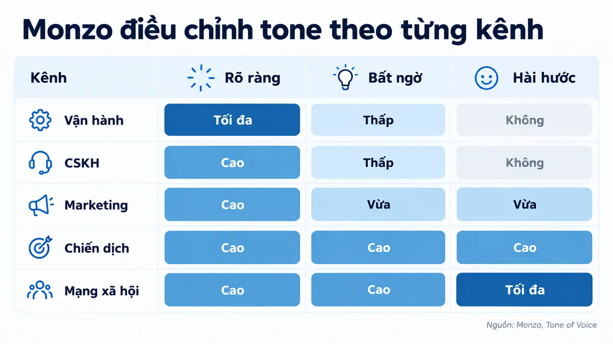
Đọc sơ đồ này theo chiều dọc sẽ thấy nguyên tắc thứ nhất luôn ở mức cao hoặc tối đa trên mọi kênh, còn nguyên tắc thứ ba dao động từ không dùng cho tới tối đa. Đó chính là ranh giới voice và tone được viết thành quy định vận hành: phần không đổi là cam kết rõ ràng và tử tế, phần đổi là lượng hài hước và lượng cảm xúc.
Monzo còn ghi cả quy tắc chọn từ ở mức rất cụ thể, ví dụ thay một câu xin lỗi vòng vo bằng một câu xin lỗi thẳng, và loại bỏ các câu đùa theo mùa đã mòn. Một quy tắc dạng này kiểm tra được ngay khi duyệt bài, khác hẳn một tính từ chung chung như thân thiện.
Điều chỉnh tone of voice bằng bốn chiều cụ thể
Để tránh tranh luận cảm tính kiểu câu này chưa đủ thân thiện, đội viết cần cùng một hệ tiêu chí. Nielsen Norman Group đề xuất bốn chiều giọng điệu, và mỗi chiều là một khoảng liên tục chứ không phải lựa chọn bật hoặc tắt.
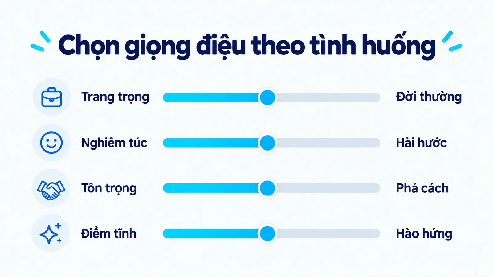
Bốn chiều đó là trang trọng hoặc đời thường, nghiêm túc hoặc hài hước, tôn trọng hoặc phá cách, điềm tĩnh theo sự việc hoặc hào hứng. Phá cách trong khung này cũng không đồng nghĩa với xúc phạm người đọc, nên doanh nghiệp cần cân nhắc đối tượng của sự hài hước trước khi thử cách biểu đạt táo bạo.
Với Mộc, bài giới thiệu có thể tăng mức hào hứng, phần hướng dẫn tăng độ chính xác, còn thông báo giao chậm tăng sự nghiêm túc. Mức tôn trọng vẫn giữ cao ở cả ba tình huống. Đó là cách biến cá tính thành quyết định viết cụ thể.
SME nên ghi hướng dẫn brand voice như thế nào?
Một bộ hướng dẫn dùng được cần nối tính từ với hành vi quan sát được. Nếu chỉ ghi chuyên nghiệp và thân thiện, hai người viết có thể hiểu hoàn toàn khác nhau mà vẫn tin rằng mình đúng.
| Đặc điểm | Quy tắc diễn đạt | Ví dụ cần tránh |
|---|---|---|
| Rõ ràng | Nói đặc điểm và điều kiện ảnh hưởng | Cam kết mọi khách đều thấy ngon |
| Gần gũi | Dùng từ quen thuộc, giải thích thuật ngữ | Viết toàn biệt ngữ nghề rang |
| Tôn trọng | Đưa lựa chọn, không gây áp lực mua | Chê người không chọn sản phẩm |
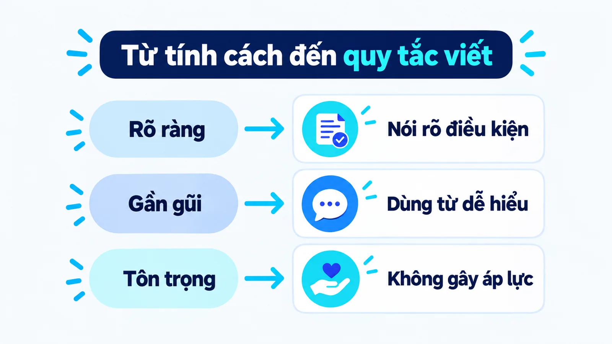
Với doanh nghiệp không có đội brand riêng, bạn không cần một tài liệu dài. Khung sáu bước dưới đây đủ để người mới viết đúng giọng ngay trong tuần đầu, và điền xong trong khoảng một giờ họp.
Bước 1: Ghi ba tính từ brand voice kèm quy tắc
Mỗi tính từ brand voice phải đi kèm một quy tắc diễn đạt kiểm tra được và một ví dụ cần tránh. Đây là phần khiến guideline khác một danh sách tính từ đẹp nhưng vô dụng.
Đầu ra: ba dòng, mỗi dòng gồm tính từ, quy tắc và ví dụ cần tránh.
Bước 2: Ghi điều thương hiệu không bao giờ nói
Một câu tuyên bố rõ ràng, ví dụ không cam kết những kết quả phụ thuộc vào yếu tố ngoài tầm kiểm soát. Ranh giới này chặn phần lớn lỗi nghiêm trọng ngay từ bản nháp.
Đầu ra: một câu giới hạn, dán ngay đầu tài liệu để ai cũng thấy.
Bước 3: Lập bảng liều lượng theo kênh
Làm đúng cách Monzo đã làm, với ít nhất ba kênh bạn dùng thường xuyên. Bảng này biến ranh giới voice và tone thành một quy định vận hành ai cũng tra được.
Đầu ra: bảng kênh nhân nguyên tắc, mỗi ô ghi một mức liều lượng.
Bước 4: Lưu bốn câu mẫu cho bốn tình huống
Bốn tình huống lặp lại nhiều nhất là giới thiệu, hướng dẫn, trả lời thắc mắc và xử lý lỗi. Mỗi câu mẫu kèm một dòng lý do vì sao chọn tone đó.
Đầu ra: bốn câu mẫu, mỗi câu có một dòng giải thích lựa chọn.
Bước 5: Liệt kê danh sách từ thay thế
Kiểu dùng từ này thay cho từ kia, vì đây là thứ người mới áp dụng được nhanh nhất. Danh sách nên ngắn và mở rộng dần theo lỗi thực tế gặp phải.
Đầu ra: bảng hai cột nên dùng và nên tránh, cập nhật hằng tháng.
Bước 6: Ghi người duyệt cuối và ngày rà soát
Không có tên người chịu trách nhiệm thì guideline sẽ trôi. Ghi kèm ngày rà soát lại để tài liệu không lặng lẽ lạc hậu sau vài quý.
Đầu ra: tên người duyệt và mốc rà soát tiếp theo ghi ngay trên tài liệu.
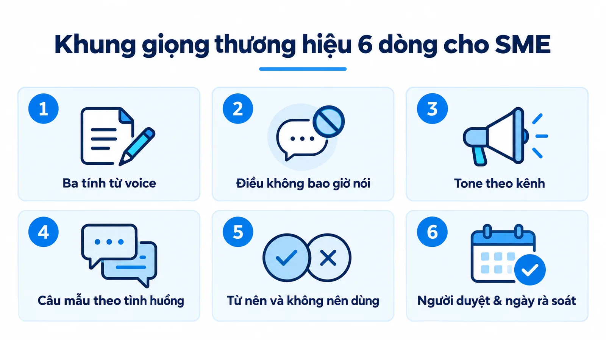
Người mới sẽ hiểu cách ra quyết định, thay vì sao chép câu mẫu sang những hoàn cảnh không phù hợp. Khi nhiều người cùng viết, người duyệt nên chỉ ra quy tắc nào đang bị lệch. Nhận xét câu này hứa kết quả quá rộng giúp người viết sửa cụ thể hơn nhiều so với nhận xét chưa đúng chất thương hiệu.
Làm sao tự kiểm một câu đã đúng giọng chưa?
Dùng năm câu hỏi theo đúng thứ tự dưới đây, và dừng lại ngay ở câu hỏi đầu tiên nhận được câu trả lời không. Thứ tự này có chủ đích chứ không phải xếp ngẫu nhiên.
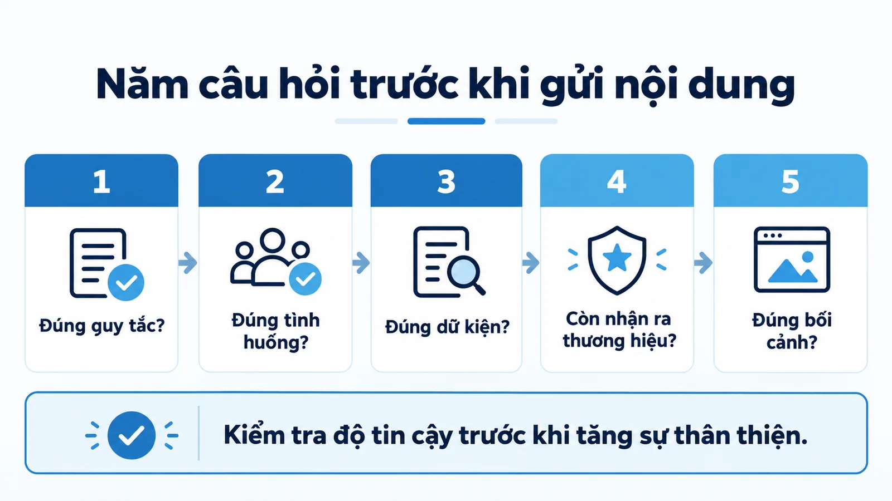
- Câu này có vi phạm quy tắc diễn đạt nào trong guideline không?
- Mức cảm xúc có phù hợp với trạng thái người nhận lúc này không?
- Mọi điều khẳng định ở đây có nằm trong phạm vi doanh nghiệp được phép nói không?
- Nếu bỏ logo đi, người đọc quen thuộc có còn nhận ra đây là thương hiệu của bạn không?
- Câu này đọc trong bối cảnh thật, đúng màn hình và đúng thời điểm khách nhận được, có còn hợp lý không?
Ba câu đầu loại bỏ lỗi nặng, gồm lệch quy tắc, lệch tình huống và sai dữ kiện. Câu bốn kiểm tra nhận diện. Câu năm là bước nhiều đội bỏ qua, vì một câu đúng cá tính vẫn có thể sai thời điểm hoặc thiếu dữ kiện quan trọng.
Kết quả thực nghiệm đã dẫn ở trên nhắc bạn một điều: nếu buộc phải hy sinh, hãy giữ mức đáng tin và bỏ bớt mức thân thiện, vì đó mới là chiều giải thích phần lớn khả năng người đọc giới thiệu bạn cho người khác.
Những nhầm lẫn cần tránh khi áp dụng brand voice
Ba nhầm lẫn dưới đây lặp lại nhiều nhất trong các dự án tôi từng rà soát, và mỗi nhầm lẫn có một cách sửa riêng chứ không chung một lời khuyên.
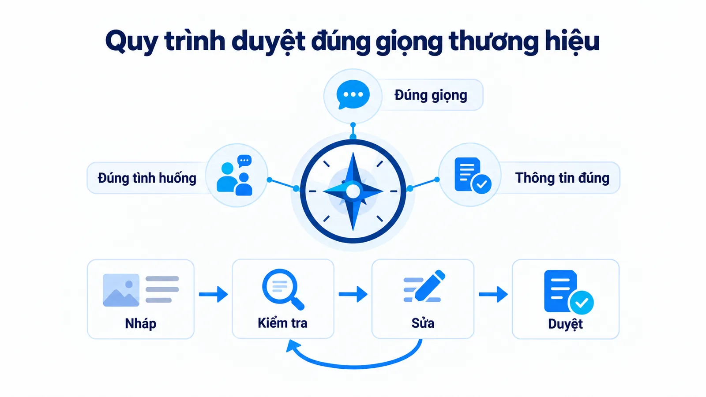
- Coi nhất quán là đồng nhất cảm xúc: Cười đùa lúc khách bức xúc khiến thương hiệu gần gũi hóa ra thiếu quan tâm.
- Tưởng đổi giọng là đổi góc nội dung: Viết cùng thông tin bằng câu hài hước chỉ thay cách nói, chưa thay vấn đề được giải thích.
- Lấy số liệu ngành làm cam kết: Mức tăng 33% là kết quả quan sát trên hơn 200 tổ chức, không phải mức bạn chắc chắn đạt.
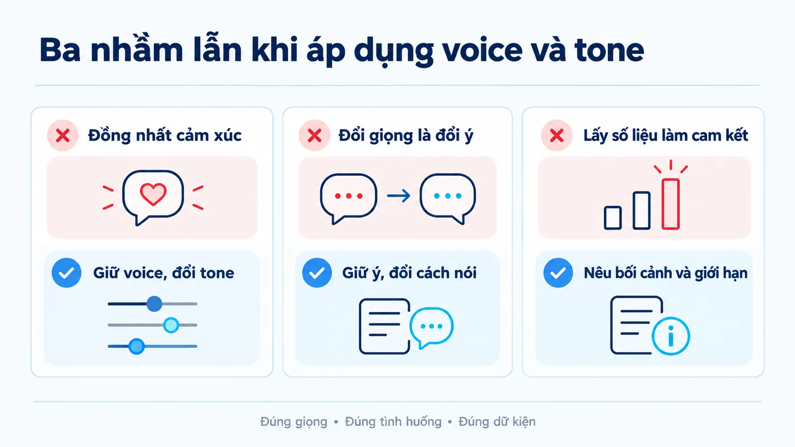
Hãy dùng con số 33% để biện luận cho việc đầu tư thời gian viết guideline, chứ đừng dùng nó để hứa kết quả với ban lãnh đạo. Ngược lại, đổi sang ngôn ngữ xa cách chỉ vì đang viết email cũng có thể làm đứt mạch nhận diện đã xây được.
Nhầm lẫn thứ hai đáng nói thêm một chút, vì nó rất hay gặp khi lên lịch nội dung. Góc tiếp cận là một lớp riêng, không phải giọng viết, nên đổi giọng không tạo ra bài mới. Bạn có thể đọc content angle là gì để thấy rõ ranh giới giữa hai lớp này.
AI có thể hỗ trợ tạo biến thể câu chữ rất nhanh, nhưng yêu cầu viết đúng giọng không bảo đảm dữ kiện đúng. Bạn cần duyệt riêng ba thứ: cá tính, sự phù hợp với tình huống và độ chính xác của thông tin. Cách tôi tách các lớp đo lường trong bài về micro conversion cũng theo nguyên tắc này.
Tôi ưu tiên hướng dẫn đủ cụ thể để người viết biết phải sửa câu nào và vì sao. Cảm nhận của khách hàng vẫn cần được kiểm tra qua phản hồi thực tế, vì không có bộ tính từ nào tự bảo đảm tăng chuyển đổi.
Câu hỏi thường gặp về brand voice
Thương hiệu nhỏ có cần phân biệt voice và tone không?
Có, nhất là khi nhiều người cùng giao tiếp với khách hàng. Doanh nghiệp nhỏ có thể bắt đầu bằng khung sáu bước ở trên rồi cập nhật dần từ phản hồi thực tế. Bạn không cần một tài liệu dài mới phân biệt được hai khái niệm này.
Mỗi kênh có nên dùng một brand voice riêng?
Thông thường nên giữ bản sắc chung và chỉ điều chỉnh giọng điệu, độ dài cùng định dạng cho từng kênh. Cách Monzo làm là giữ ba nguyên tắc cố định rồi quy định liều lượng khác nhau theo kênh. Nếu doanh nghiệp có thương hiệu con với định vị riêng, đó lại là một quyết định kiến trúc thương hiệu cần được làm rõ.
Làm sao biết một câu đã đúng giọng thương hiệu?
Đối chiếu câu đó với quy tắc diễn đạt trong guideline, nhu cầu của người nhận và phạm vi thông tin doanh nghiệp được phép khẳng định, sau đó đọc lại trong bối cảnh thật. Thang năm câu hỏi ở phần trên chính là bản rút gọn của quy trình này.
Giọng hài hước có làm thương hiệu được yêu thích hơn không?
Không phải lúc nào cũng vậy. Trong thực nghiệm của Nielsen Norman Group, mẫu bảo hiểm viết giọng hài hước được chấm thân thiện hơn 0,3 điểm nhưng đáng tin thấp hơn 0,3 điểm, và không tạo khác biệt nào về khả năng được giới thiệu. Mức phù hợp phụ thuộc chủ đề và trạng thái người đọc.
Bao lâu nên rà soát lại hướng dẫn giọng một lần?
Nên rà soát khi định vị thay đổi, khi phục vụ nhóm khách hàng mới, hoặc khi người duyệt thấy cùng một loại lỗi lặp lại nhiều lần. Ngoài các mốc đó, mỗi năm một lần là nhịp hợp lý với phần lớn doanh nghiệp nhỏ. Hãy ghi ngày rà soát ngay trong guideline để việc này không bị quên.
Kết luận
Phân biệt brand voice và tone of voice không phải chuyện chữ nghĩa. Đó là cách để đội ngũ biết điều gì cố định và điều gì được phép thay đổi, nhờ vậy thương hiệu vừa giữ được nhận diện vừa nói đúng với tình huống mà khách đang gặp.
Hãy bắt đầu bằng khung sáu bước ở trên, rồi bổ sung dần từ lỗi thực tế mà người duyệt ghi nhận. Bạn có thể đọc thêm các bài cùng mảng trong chủ đề Marketing của Góc kiến thức, hoặc xem phần năng lực chuyên môn và dự án đã triển khai trên trang hồ sơ của tôi.